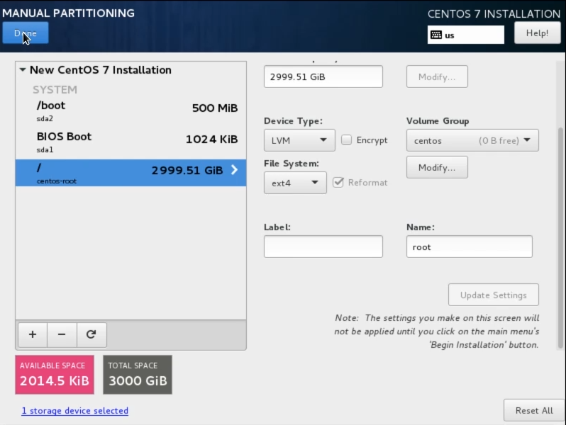
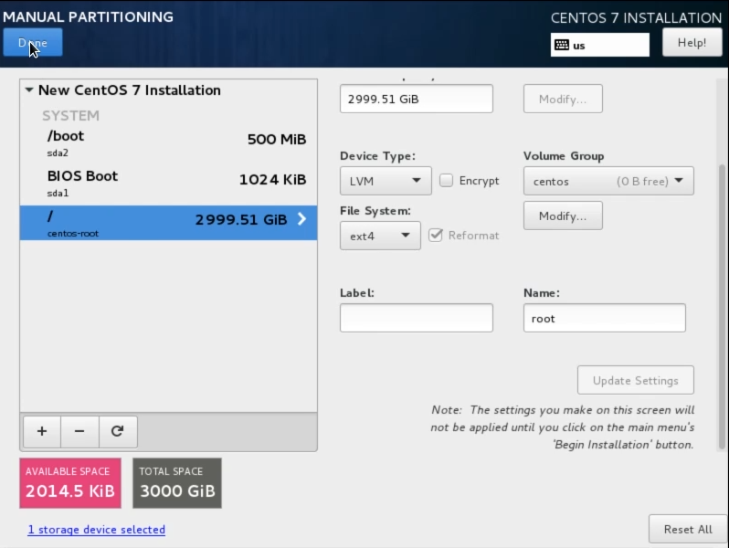

Делаем Time Capsule на основе Linux
cats: Linux, Железо, Прочее, Сисадминство
tags: Apple, linux
2017-07-03 02-21 linux-based-time-capsule-diy\
Time Capsule (рус. капсула времени) — довольно дорогое устройство, выпускаемое компанией Apple, сочетающее в одном корпусе жёсткий диск и базовую станцию AirPort Extreme. Позволяет осуществлять беспроводное резервное копирование на настольном компьютере или ноутбуке Mac. Устройство поддерживает программу Time Machine, входящую в Mac OS X (Wikipedia)
Основная функция Time Capsule в том, чтобы хранить резервные копии OS X, но это не значит, что её нельзя сымитировать. Именно этим мы и займёмся. Всё, что нам понадобится: флешка на 1Гб, жёсткий диск и любой ненужный компьютер.
Чтобы упростить этот урок, я не рассказываю, как сделать WiFi роутер. Возможно мы этим займёмся в других уроках. Наша задача собрать компьютер, который при подключении в локальную сеть будет виден как настоящий Time Capsule. Мы будем делать наш Time Capsule на основе Linux, я выбрал Centos 7, как один из самых стабильных дистрибутивов.
Приступим.
Создание установочной флешки под MacOS
- Заходим на сайт https://www.centos.org/download/, выбираем Minimal ISO и качаем с любого сервера.
- Записываем ISO-файл на флешку. Это можно сделать разными способами, но я решил использовать стандартные средства MacOS.
Открываем Дисковую утилиту.
Здесь нам нужен только номер диска. Запоминаем его и нажимаем извлечь.
- Далее открываем терминал и пишем:
sudo dd if=PATH_TO_ISO of=/dev/diskNNN bs=1m
PATH_TO_ISO - путь к скаченному файлу
NNN - номер диска из дисковой утилиты
- Команда подвиснет на несколько минут, затем выдаст сообщение
Нужно нажать извлечь.
- Флешка готова
Установка Centos 7
- Втыкаем флешку, выбираем её в BIOS и загружаемся с неё.
- Настраиваем сеть. Нужно указать статический IP адрес, DNS и шлюз, а также включить активацию адаптера при загрузке.
Пояснение к IP адресам. Я понимаю, что не все сисадмины и знают как работают IP адреса. Поэтому поясню какой IP нужно указать.
Сперва посмотрите какой IP адрес у вашего компьютера через настройки сети.
Обычно роутеры выдают IP адреса 192.168.0.xxx или 192.168.1.xxx, а xxx от 1 до 254. В любом случае меняется только последняя цифра. Я выбрал 192.168.0.200, потому что обычно он не занят.
-
Настройка разделов на диске.
 

С настройкой разделов всё просто. Файл подкачки не нужен при 2 и более Гб памяти, а из разделов нужно оставить только /boot и /. Подробнее на видео
Настройка LINUX
Мы установили Linux и подключили его к локалке. Теперь нужно настроить на нём службы. Всю настройку мы будем проводить с компьютера с MacOS удалённо, череp ssh.
- Открываем терминал
- пишем ssh root@IP_ADDR (IP адрес, который мы указали при установке Centos)
- последовательно выполняем команды из текстового файла: TimeCapsule.txt
- Если всё сделано правильно, то при открытии Time Machine появится наше новое устройство. После подключения, начнётся резервное копирование
На этом всё. А вот и обещанное видео руководство как это сделать
{kind=link}
{kind=link}
{kind=link}
{kind=link}
{kind=link}
{kind=link}
{kind=link}
{kind=link}
{kind=link}
{kind=link}
{kind=link}